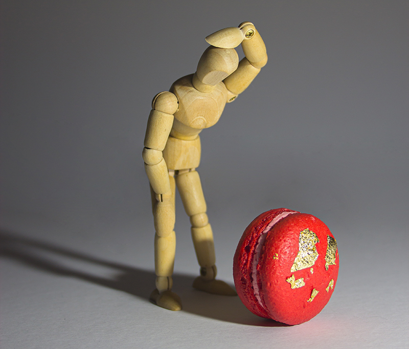
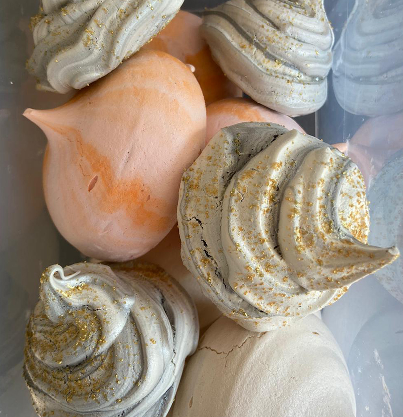
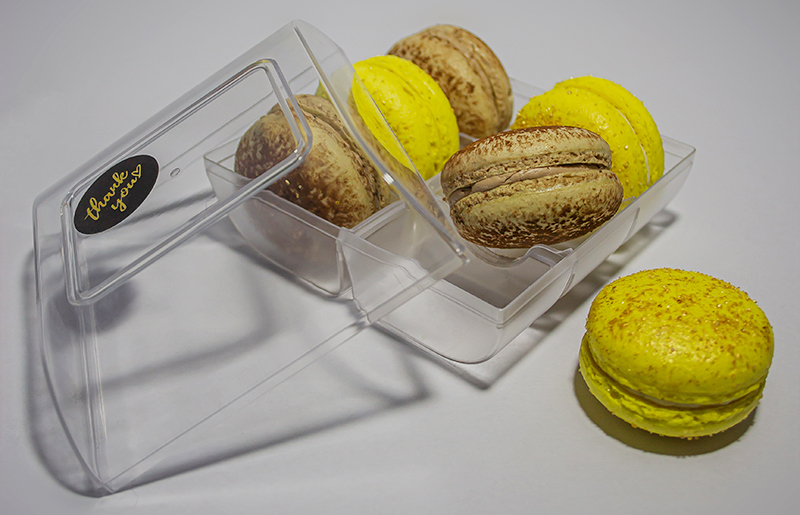

why did I start making macarons
It began with the memories of eating chocolate custard with merengues and freshly whipped cream at my grandparents. It was a tradition that we ate chocolate custard with merengues or strawberries with sugar on family gatherings. So, I wanted to have that dessert again, but it was quite the challenge to find the right merengues, that had the perfect texture. So, I decided to make my own merengues.
From merengue to macaron
After a while of finding out how to get the perfect texture merengue for the chocolate custard dessert that was imprinted in my memory so well, the simple egg white and sugar recipe became a bit boring. Turned out that for the macaron shells you only needed one more ingredient, almonds, to be precise, ground almonds. So, after some time of experimenting, with some tweaking creating my own recipe, I created my own macaron you could say. It’s still not perfect, but every time I learn more, and every time they get better.
Time to better the fillings
Having figured out the macaron shells, I started to focus more on the fillings. In the beginning I just used a basic Italian buttercream with flavor oils. But having to put less focus on the macaron shells made me better the fillings. Now giving macarons two fillings, one of my most popular macarons would be the white chocolate lemon ganache with lime curt in the center, or the dark chocolate ganache with fresh strawberry jam in the center.
To conclude
So, from simple merengues, to basic macarons with a buttercream with some concentrated flavor makers, to my own recipe macarons with all natural and fresh fillings. It has now been a little over two years of making macarons. It is still a hobby, and I don’t do it daily, but it stays a great activity. And it’s always a great thing to bring along some macarons to parties and birthdays.
So, thanks for listening to my story, and I hope you enjoy the rest of my tribute website to macarons.